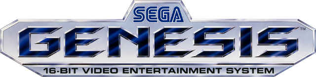
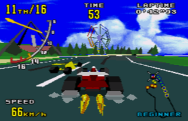
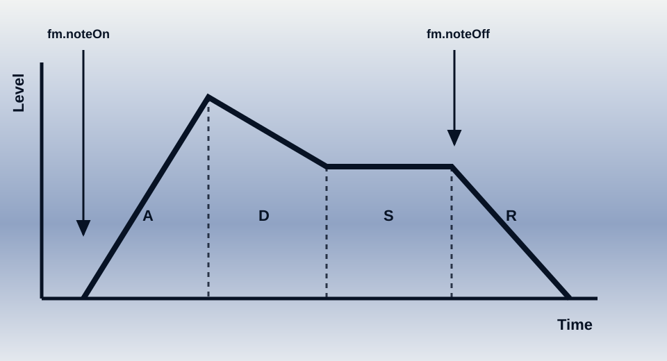

Sega Genesis / Mega Drive YM2612 FM Introduction with JavaScript
FM synthesis can be difficult at first. It asks you to learn both parameter design and performance technique.
The Sega Genesis / Mega Drive is a retro game console, but it includes the YM2612, a 4-operator, 6-channel FM sound chip. Compared with modern synth setups, that may look small, but it created a huge amount of memorable music and sound.
A lot of that know-how still survives in VGM files made and preserved by enthusiasts. By reading and replaying them, we can study how people actually used the chip and how they shaped its sound.
Today, even this small 4-operator, 6-channel setup feels like an interesting starting point for learning FM. With Tetorica, we prepared an environment where you can try it directly from JavaScript.
If that sounds interesting, let's keep going.


Experimental reference images for the introduction page: Genesis / Mega Drive branding and one iconic FM-era game image.
Source reference for the imported images: Sega Genesis - Wikipedia
Hello, YM2612 FM Sound!!
Let's hear Sega Genesis sound first. The Sega Genesis / Mega Drive uses Yamaha's YM2612 sound chip.
With ymfm, a library created by Aaron Giles, we can reproduce that chip sound in a web browser too.
So let's begin with something simple: Do Re Mi Fa Sol La Si Do.
Welcome to the world of YM2612.
Open the full Playground (with console, examples, and the operator editor) →
FM Sound Magic.
A good next step is ADSR: Attack, Decay, Sustain, and Release. This is the part that makes a sound feel like a pluck, a bell, an organ, a brass hit, or something soft and slow.
On the YM2612, those ideas are controlled with parameters such as
AR, D1R, D2R, SL, and RR.
They decide how fast the sound rises, how it falls after the peak, how long it stays,
and how it disappears after key off.

There are more parameters too, such as DT, MULTI, and TL.
But first, here is a small example patch so you can see what "setting a sound" looks like in code.
One Operator Magic
The YM2612 makes sound by combining 4 operators in each channel. But if you change all 4 operators at the same time, the result can feel too unpredictable, and it becomes hard to build an intuitive sense for ADSR.
So why not start with just one operator first?
Operators: the Only Sound Source
Every voice the YM2612 makes comes from combinations of just one building block, called an operator. An operator is a sine wave generator with its own pitch, volume envelope, and a couple of shaping knobs (detune, frequency multiplier). On its own an operator just sounds like a plain tone. What makes FM synthesis interesting is what happens when one operator's output is used to modulate another operator's frequency instead of being sent straight to the speakers.
The YM2612 gives each of its 6 channels exactly 4 operators. How those 4 operators are wired together — who modulates whom, and who reaches the output — is called the algorithm. There are 8 fixed algorithms to choose from per channel. Algorithm 7 is the simplest to start with: all 4 operators are carriers, wired straight to the output with no modulation between them, so you can hear each operator's raw contribution before adding modulation back in.
Load the 2 Operator Demo when you want to compare carrier/modulator behavior more directly.
Open in its own page →Compare the 8 Algorithms
The same 4-operator patch below is wired 8 different ways — nothing changes except the algorithm. Click a button to hear it. Notice how algorithms with more operators feeding into a single carrier (like ALGO 0) sound more metallic and complex, while algorithms with more operators reaching the output in parallel (like ALGO 7) sound closer to layered plain tones.
Click a button to load audio and play.
Load the full Synth app when you want to try the same ideas with a larger hands-on control surface.
Open in its own page →Analyze a Real Sound with the Analyzer
Everything above used hand-written parameters. The FM2612 VGM Analyzer works the other way: load a real VGM recording and see the actual register writes a game sent to the chip — inspect parsed commands, watch all 6 YM2612 channels live, and export a channel's current operator/algorithm state as a snapshot or TFI patch.
VGM files for real Mega Drive / Genesis game music are available from sites like zophar.net and smspower.org, or from project2612.org (archived) and its bulk archives: Project 2612 Complete Archive (2018-06-23, 681 sets) and Project 2612 Complete Archive (2021-07-12, 704 sets).
Load the Analyzer when you want to inspect real VGM files, watch register changes, and extract patches.
Open in its own page →How Software Talks to the Chip
The real chip only has an 8-bit data bus and two address-select pins (A0, A1),
so every parameter change is really just two writes: pick a register address, then write a value into it.
ymfm and this repository's JavaScript layer hide that two-step dance behind readable method
calls, but underneath it is always the same pattern:
0x30-0x3c— detune and frequency multiplier, per operator0x40-0x4c— total level (volume), per operator0x50-0x5c/0x80-0x8c— envelope rates (attack, sustain, release), per operator0xa0/0xa4— frequency, per channel0xb0— algorithm and feedback, per channel0x28— key on / key off, to start and stop a note
The YM2612 Basics page walks through this register map and the pin layout in more detail, down to the exact bytes used to make a single beep.
Keep Reading
Under construction...
Back